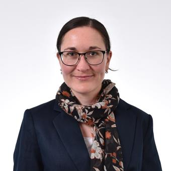

Sarah Mitchell
Directrice Générale & Co-fondatrice
Experte en développement international avec 15 ans d'expérience dans les organisations multilatérales. Ancien cadre à la Banque Mondiale, spécialisée dans les financements innovants pour les pays émergents.